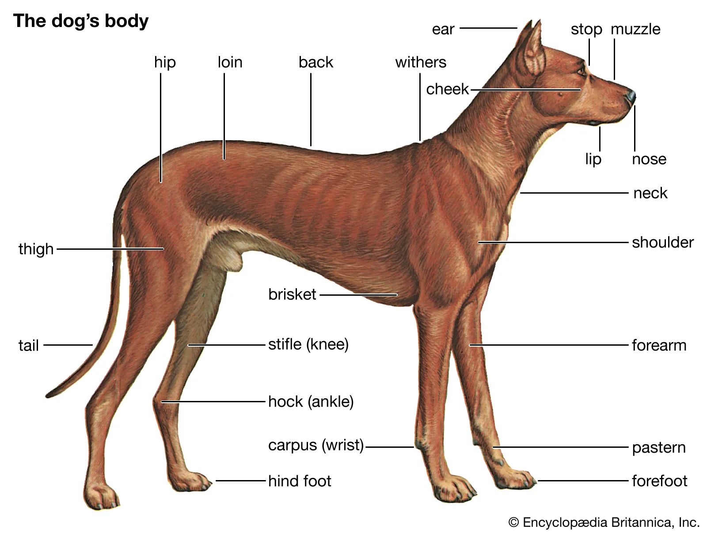

Dog

the dog is a domesticated descendant of the wolf. The dog was the first species to be domesticated by humans, over 14,000 years ago and before the development of agriculture.
Horse

The horse is a domesticated, one-toed, hoofed mammal. It belongs to the taxonomic family Equidae and is one of two extant subspecies of Equus ferus. The horse has evolved over the past 45 to 55 million years from a small multi-toed creature, Eohippus, into the large, single-toed animal of today.
Parrot
Parrots , also known as psittacines are birds with a strong curved beak, upright stance, and clawed feet.[a] They are classified in four families that contain roughly 410 species in 101 genera, found mostly in tropical and subtropical regions.